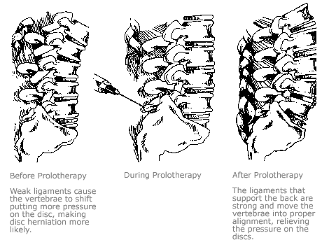

Prolotherapy
Dr. Meyer injects a safe solution containing dextrose and lidocaine which has no systemic affect on diabetics or others sensitive to sugar.
Injury to ligaments causes them to be overstretched and weak and much too loose to be supportive; thus the joints become unstable. This instability often leads to muscles overworking in an attempt to compensate, which results in muscle spasm, trigger point pain, or achy fatigue. There is also increased wear and tear on the cartilage, the capsule, and the joint and eventually the pain of arthritis. The tendons (in particular where they attach to bone) get chronically inflamed, become friable and weakened, are unable to handle the load of repetitive use or muscle deconditioning, and not only hurt but eventually can tear (as in a rotator cuff tear).
There are very few areas that cannot be injected based on important blood vessels or nerves that need to be avoided. Even the spine where discs have herniated is supported by ligaments and other tissue that when strengthened, decrease the impingement on nerves. Stenosis improves because the strengthened tissue can prevent narrowing and restore stability to the spine.
An initial visit costs $140 for a thorough physical exam and discussion of treatment options.
Subsequent visits involving Prolotherapy, generally range from $75 to $300 depending on the region (or about $10 per injection).
Because each patient has a unique history and physical exam, I am unable to provide reliable information before an intial visit. To determine treatment for a specific area of pain, please schedule an appointment.
